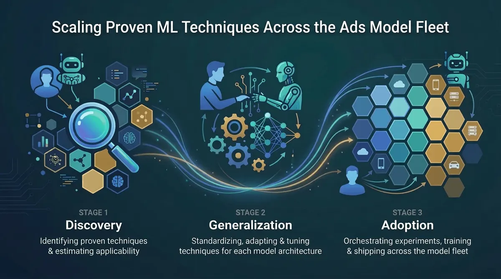
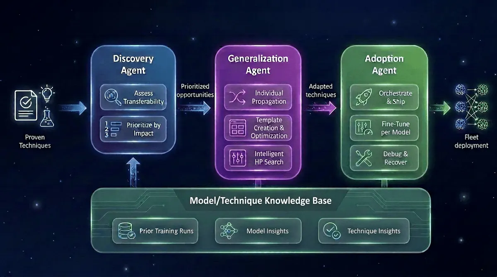

技術擴散：代理接手六成擴散工作
導讀原文：Meta Engineering〈How Meta Uses AI Agents to Scale ML Innovations Across Ads Ranking Models〉——工程部落格技術文，REA（Ranking Engineer Agent）系列第二篇，主題不是代理本身，而是「技術如何擴散到整個模型艦隊」
技術的價值不在被發明，而在被複製到每一個模型：Meta 讓代理接手「技術擴散」，把瓶頸從工程頻寬移到判斷品質。
原文的 technique 定義很寬：Wukong 分解層、Interformer 互動網路、更豐富的資料表徵、訓練與推論效率，凡是讓排序模型變好的都算。
但艦隊沒有共同規格——每個模型服務不同版位與廣告主目標，架構、訓練資料、服務限制各自不同。
原文說得直白：在一個模型上驗過的技巧，幾乎不能直接複製到下一個。核心想法可轉移，實作幾乎不行。
技巧還有保鮮期：今天的增益可能在幾個模型開發週期內被下一代取代。擴散得慢，價值就折舊。
技巧清單在長、模型又在增加，兩者相乘就是一個不斷膨脹的組合空間：要試的技巧-model 配對，遠比人能試的多。
兩個限制同時收緊。工程頻寬：每次適配都要人同時熟悉技巧與目標模型。算力：每次嘗試都要一次訓練跑。
2 年標準化與自動化（SMT 模板）已交付 5,000+ 個 technique-model 組合、單模型工程時間降 92%（Meta 自報）。
但模板只吃掉確定性的步驟。剩下的都是判斷題：哪個技巧值得給哪個模型、搜尋要多寬、為何沒增益、失敗怎麼修。

三段交接的核心差別在產出物：候選清單、可用的適配、可上線的模型。產出物不同，驗法就不能同一套。
三條適配路線，代價各不相同
| 路線 | 誰執行 | 代價／限制 |
|---|---|---|
| 專家手工適配 | 領域專家工程師 | 結果最強，仍用於最高營收模型；每人要同時熟悉技巧與目標模型，吞吐被工程頻寬鎖死 |
| 模板泛化 | 代理協助建、評、改模板 | 驗一次即覆蓋所有同模板模型，算力只佔逐模型適配的一小部分；覆蓋不到模板外的模型 |
| 逐模型客製 | 代理提案，工程師覆核 | 工程師得先帶做少量模型；覆蓋品質取決於代理從那幾次決策裡學到多少 |

三條路線不是替代關係，而是分工：模板吃掉可複用的大多數，客製留給最高營收模型，代理在中間接手判斷。
代理吃的是非確定性的部分：決定試哪些適配、診斷失敗並自動緩解、有效率地走訪超參數空間、管理數百個並行工作。
它們共用一個知識庫：過去訓練跑、模型架構與技巧結果的累積紀錄。所以每輪從「最可能成功」的設定起步，而不是從零。
這也是算力降幅的機制：用上一輪結果收窄下一輪搜尋，並提早停掉不值得續跑的實驗。部分組合訓練算力中位數降 4 倍（Meta 自報）。
換算成人力：每位工程師能處理 3 倍多的適配——這是原文的粗算，不是另有獨立量測。
人的位置因此改變：從盯每一次訓練跑、逐一手動 triage 失敗，變成在決策點覆核、設優先序。
數百個工作並行時誰先跑也是演算法問題：代理依營收重要性、技巧潛力、時限排序，並把卡住或低價值的跑程回收。
先量代理，再談擴產
代理擴散的技巧，驗法與工程師相同：離線 NE 要進步、訓練與推論成本等 guardrail 不能退，最後要線上 A/B 顯著勝出。
只驗終點太晚。代理跨階段跑好幾天，每階段產出物不同，所以每段各有指標。
Discovery 量候選的 precision 與 recall。recall 更重要——這階段漏掉的模型沒有第二次機會。
precision 則當護欄：別讓算力花在不會成功的技巧上。
Generalization 先在縮小版模型上篩，過關才進全尺寸模型，須改善 NE 並守住每個 guardrail。
Adoption 另外量代理的生產力：完成一個實驗要幾次人工介入，以及多少比例的問題由代理自行診斷並緩解。
單位：一個已證實技巧到達所有適用模型的時間；愈短愈好。現況取原文字面「超過一年」，目標為原文 aiming to reduce、非已達成。原文未給實測月數，長條比例為本站示意。
差距就寫在原文裡：一條技巧走完全艦隊現在要一年多，目標壓到三個月，端到端吞吐還要再推高 5 倍。
超過 60% 是 Meta 的估計值，原文未交代分母——哪些工作算一單位「擴散」，讀者只能接受其口徑（編輯觀點）。
下一步押在代理自己變強：以累積結果調整策略的 self-evolving learning，而不是等人餵規則。
帶走三件事
擴散的瓶頸是判斷，不是流程。標準化只吃掉確定性的那一段。
代理的產能來自共享知識庫。累積的訓練紀錄本身就是資產。
一年變三個月是目標。看成效先看限定語與分母。
同一主題的其他館藏
導讀為本站編輯內容（AI 摘解自原文與館藏重點，非官方文件）；引述數據出自原文，圖解與小標為編輯整理；兩張原圖出自 Meta Engineering，圖 B 的數據條為本站重繪。所有成效數字為 Meta 自報、無第三方驗證。內容經對照原文的獨立事實審查後發布。